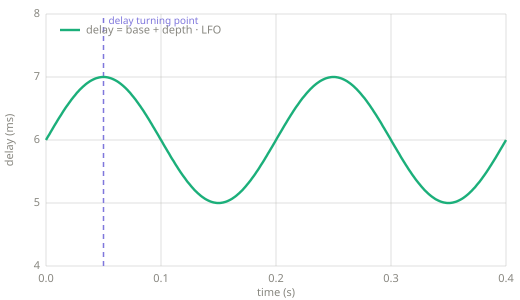
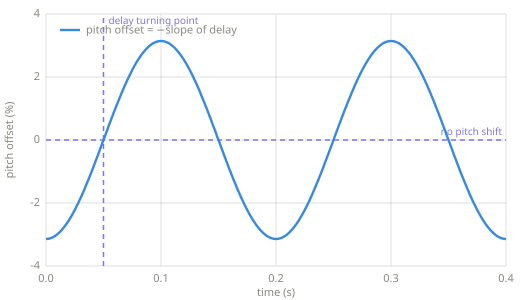

Vibrato¶
Vibrato varies a signal's pitch periodically. An LFO sweeps the length of a short delay line, and the sweep shifts the pitch.
Chapter 7 — delay and modulation. The LFO of Chapter 4 pointed at a delay time instead of a volume knob.
Vibrato is not tremolo
Vibrato modulates pitch; tremolo modulates volume (Chapter 5). Decades of guitar amplifiers label a tremolo circuit "vibrato," so the label on an amplifier is unreliable. This page is the pitch effect.
Intuition¶
A delay line holds a piece of the signal, and the read position slides along it like a tape head. While the delay grows, the head moves against the signal and every cycle takes longer to come out, so the pitch drops. While the delay shrinks, the pitch rises. A fixed delay changes nothing about pitch. Only a changing delay does, and vibrato keeps the delay changing by sweeping it with an LFO.
The size of the shift follows the rate of change. If the delay grows by \(\Delta\) samples per sample, the output pitch is scaled by \(1 - \Delta\). The sweep is gentle, so the shift stays within a few cents and reads as wobble rather than as a new note.
Key parameters¶
| Parameter | What it controls |
|---|---|
| Rate | The LFO frequency (Hz). Musical vibrato sits near 5 Hz. |
| Depth | How far the delay swings (ms), and so how far the pitch swings. |
| Base delay | The center of the swing (ms). It adds a small fixed latency. |
How it works¶
- Run an LFO at the rate, mapped into \([0, 1]\).
- Compute the moment's delay, base plus depth times the LFO value.
- Read the delay line at that delay and emit the result. The output is the delayed signal only, with no dry mix.
The delay is fractional. An integer delay would jump one whole sample at a time, and each jump would click. The read instead interpolates linearly between the two nearest stored samples, for a fractional delay \(D = i + f\):
def vibrato(x, sr, rate_hz=5.0, depth_ms=2.0, base_ms=5.0):
"""Pitch wobble: an LFO sweeps a short delay, and the sweep shifts pitch.
The delay is fractional, so the read interpolates linearly between the
two nearest stored samples.
"""
line = RingBuffer(int(sr * (base_ms + depth_ms) / 1000.0) + 2)
out = []
phase = 0.0
step = rate_hz / sr
for s in x:
lfo = 0.5 + 0.5 * math.sin(2.0 * math.pi * phase) # in [0, 1]
delay = (base_ms + depth_ms * lfo) * sr / 1000.0
i = int(delay)
frac = delay - i
delayed = (1.0 - frac) * line.read(i) + frac * line.read(i + 1)
line.push(s)
out.append(delayed)
phase += step
if phase >= 1.0:
phase -= 1.0
return out


The sweep and its result (code/make_figures.py). The two figures share a time axis,
and the marked turning point lines up with a zero crossing of the pitch offset. Pitch
follows the slope of the delay, not its value, so the pitch offset runs a quarter cycle
behind the sweep, and the deepest drop lands where the delay climbs fastest.
Pitfalls
- Too much depth or rate stops sounding like vibrato. Wide fast sweeps read as a siren or as seasickness. Musical settings stay small.
- Linear interpolation dulls the highest frequencies slightly. Production pitch shifters use better interpolation; the trade is complexity.
- The base delay is latency. A vibrato with a 5 ms base arrives 5 ms late, which is harmless in a recording and noticeable in a live monitor path.
Related effects¶
- Tremolo: the same LFO pointed at volume. The pair are the two simplest modulation effects, and amplifiers confuse their names.
- Chorus: this effect mixed with the original signal.
Learn more¶
- Udo Zölzer (ed.), DAFX: Digital Audio Effects, 2nd ed., Wiley — delay-line modulation and interpolation.